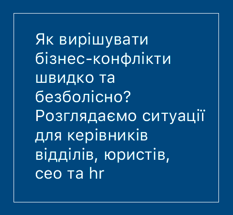
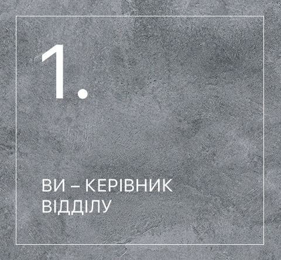
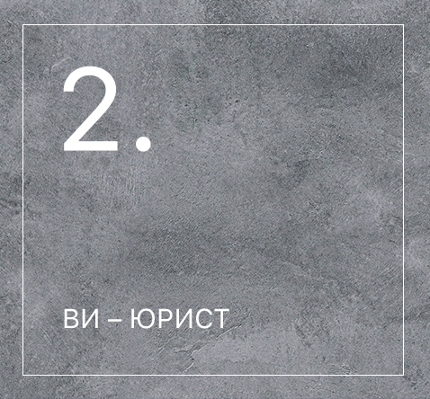
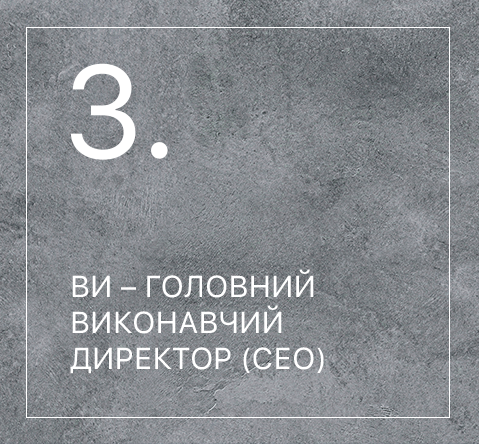
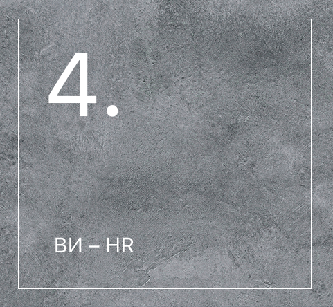
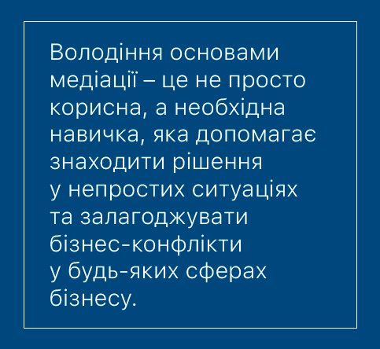

Без суперечок - ніяк. Однак, якщо любовні або дружні конфлікти можна
вирішити відносно легко і без відчутних втрат, то у бізнесі усе
по-іншому. Щоб адекватно владнати конфлікт між бізнес-партнерами чи
між роботодавцем та працівником, необхідні відповідні навички. Саме
у такому випадку на допомогу приходить мистецтво медіації.
Якщо ви власник бізнесу, займаєте керівну посаду або ваша робота
полягає у налагодженні корпоративних стосунків між підлеглими, ви
можете зіткнутись із численними конфліктними ситуаціями. Ми, разом
із Бізнес Школою КРОК, пропонуємо розглянути деякі із них і
з'ясувати, як їх можна вирішити за допомогою основних принципів
медіації.

Мистецтво медіації допоможе вам посилити свої позиції у компанії,
навчить правильному спілкуванню із підлеглими, що зі свого боку
підвищить продуктивність усієї команди.
Тепер уявімо ситуацію. Група ваших підлеглих працює над великим корпоративним проєктом. Вони не можуть поділити обов'язки та правильно делегувати основні задачі. Це джерело не одного конфлікту.
Тепер уявімо ситуацію. Група ваших підлеглих працює над великим корпоративним проєктом. Вони не можуть поділити обов'язки та правильно делегувати основні задачі. Це джерело не одного конфлікту.
Хороший керівник, завдяки своїм здібностям медіатора, вислухає кожну
сторону, проаналізує ситуацію і тоді запропонує компромісне рішення,
яке усіх влаштовує. Для прикладу, якщо над проєктом працює велика
команда, то вислухавши усі сторони, ви зможете поділити працівників
на мінігрупи. Кожна група буде займатися одним направленням проєкту.
А щоб співробітники не сварилися за провідні позиції, поставите у
наглядачі незалежну людину із компанії.
Медіація розвиває такі навички, як емоційний інтелект, тому ваше
рішення співробітники підтримають одноголосно. Таким чином, ви не
тільки вирішите складне для ваших підлеглих питання, а ще й
поліпшите відносини із командою.

Хоча у сучасному суспільстві зростає число судових розглядів, не
кожному правовому питанню місце в суді. Саме медиативні підходи
дозволяють вирішити конфлікти у досудовому порядку. Існує думка, що
юристам не варто звертатися до медіації. Адже ви представляєте свого
клієнта і повністю на його боці. Тому не може бути мови ні про
спілкування із другою стороною, ні про врахування її інтересів.
Але справжній професійний юрист вживає усіх можливих заходів для
вирішення конфліктів за допомогою будь-яких способів, у тому числі і
мистецтва медіації.
Ваш кейс: чоловік и дружина у процесі розлучення. Вони поділили між собою усе окрім однієї юридичної особи. Пара постійно спілкується на підвищених тонах.
Ваш кейс: чоловік и дружина у процесі розлучення. Вони поділили між собою усе окрім однієї юридичної особи. Пара постійно спілкується на підвищених тонах.
Хоча у сучасному суспільстві зростає число судових розглядів, не
кожному правовому питанню місце в суді. Саме медиативні підходи
дозволяють вирішити конфлікти у досудовому порядку. Існує думка, що
юристам не варто звертатися до медіації. Адже ви представляєте свого
клієнта і повністю на його боці. Тому не може бути мови ні про
спілкування із другою стороною, ні про врахування її інтересів.

Як СЕО ви зможете використовувати медиативне мистецтво у роботі із
конфліктами і налагодити ефективну співпрацю та діалоги між вашими
співпробітникамі у складних ситуаціях. Також ви зможете інтегрувати
практики медіації у свою програму розвитку потенціалу ваших
співробітників із метою розвитку гнучкого мислення та лідерських
навичок у ваших підлеглих.
Ситуація наступна: ваші співробітники незадоволені роботою
відділу фінансів та бухгалтерії, через що постійно відбуваються
конфлікти. Через велике наважнтаження співробітники відділу
відмовляються займатися певними видами документів, наприклад
оформлення ФОП. Кожен день ваші підлеглі починають із суперечок із
фінансистамі та гальмують роботу компанії.
Ви, володіючи навичками медіатора, зможете діагностувати причини
конфлікту, знайти його підгрунтя, вислухати всі сторони і прийняти
рішення. Приміром, найняти ще одну людину, яка буде займатися суто
оформленням ФОП. Таке рішення допоможе зняти навантаження з інших
працівників відділу і влаштує усі сторони суперечки.

Медіація допоможе вам вирішувати конфлікти, враховуючи всі процеси
та можливості компанії, не зашкодивши виробничим процесам.
Медиативний підхід допоможе підтримувати співробітників. Ви зможете
допомогти знайти рішення навіть у тих ситуаціях, де, здавалось,
немає виходу.
Наприклад, ваша компанія переживає не найкращі часи.
Наприклад, ваша компанія переживає не найкращі часи.
СЕО вирішує скоротити частину персоналу. У цій складній ситуації ви,
завдяки навичкам медіатора, зможете знайти компромісне рішення для
звільнених співробітників і для компанії таким чином, щоб справа не
дійшла до суду. Скажімо, співробітники отримають достойну
компенсацію та рекомендації для інших компаній, де шукають таких
спеціалістів.
У такі непрості періоди важливо як зберегти репутацію компанії, так
і максимально оптимізувати усі її ресурси. І в деяких випадках
компанія могла б залучити юриста, щоб він оцінив всю ситуацію по
трудовому кодексу, але, завдяки мистецтву медіації, ви збережете і
час, і кошти, и лояльність співробітників.

Бізнес-школа КРОК відкриває набір на освітню програму
"Магістр із медіації та менедждменту конфліктів." За час
навчання ви навчитесь досконало вирішувати конфлікти мирним шляхом,
опануєте навички міжособистісного спілкування, розвинете аналітичне
мислення та зможете використовувати інформаційні та комунікаційні
технології як для спілкування з іншими професіоналами, так і для
отримання важливої для вас інформації.
Реєструйтесь зараз та
отримуйте гарантовану знижку 50%.
Вивчайте мистецтво медіації та вирішуйте конфлікти як справжній
професіонал разом із Бізнес-школою КРОК!